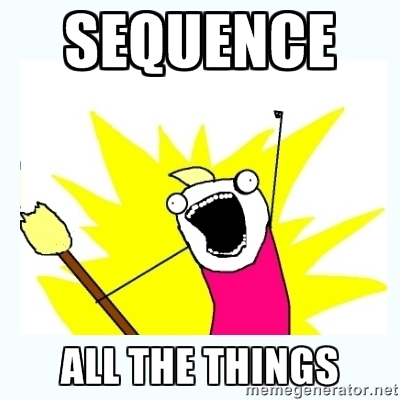
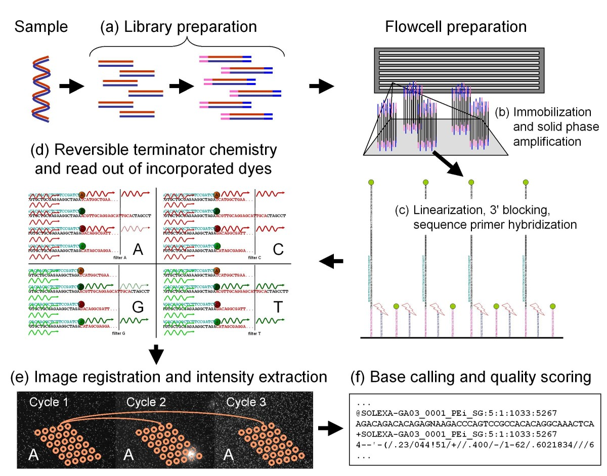

Introduction to Bioinformatics
April 7, 2016
Facilitated by John Huddleston
huddlej@gmail.com
Why are we here?
- Experience practical bioinformatics
- Explore bioinformatics tools to apply to future projects
Who am I?
- Bioinformatics specialist in a human genetics lab at the University of Washington for 5 years
- Professional programmer for 8 years
- M.S. in computer science and biology from WWU
- Husband, father, and nerd.
Who are you?
- Biologists?
- Computer scientists?
- Students, professors, or staff?
- Eager future bioinformaticians?
The plan for today
- Introductions
- Working with sequence data
- Creating and assessing sequence alignments
- Discovering and assessing genetic variants
- Review
Outcomes for this workshop
At the end of this workshop you will know how to:
- Identify genomic variants from sequence data
- Interpret and evaluate the quality of genomic data
- Apply tools that rely on standard genomic formats
Review of command line basics
Let's review before we begin...
Login to Amazon workstation
Open a terminal and run the following command:
ssh -i key-pair.pem participantN@ip.address
Change to your working directory:
cd analysis/
Why do we sequence organisms?
- What questions do we have about our organisms?
- How can sequence data answer those questions?
- What questions can't be answered by sequence data?

How do sequences originate?

Kircher et al. 2011
(Bonus poster if you really want your minds blown)
What do we do with sequences once we have them?
- Assess for quality
- Align to a reference assembly and call variants
- Align to databases of previously annotated sequences (e.g., BLAST)
- Assemble into a representation of the original DNA
- Annotate genomic or functional features
- Search for specific sequences (e.g., motifs, kmers, etc.)
- Infer population structure
- And...?
What we will do today
- Assess for quality
- Align to a reference assembly and call variants
Sequence review
- What do "sequence" data look like?
- How big are our FASTQ files?
- How do we evaluate sequence quality?
fastqc --help
Sequence alignment
- Why would we align our sequences to a "reference" genome?
- What does a reference look like?
- How do we align sequences to a reference?
samtools faidx
bwa
bwa index
bwa mem
Inspecting sequence alignments
- How long did the alignment take?
- How big is the output file?
- What type of file is the output?
- How many lines are in the file?
- How does the file appear to be organized?
Working with SAM files
- First, let's review the SAM specification
- How do you view just the SAM header?
- How many reads are in your SAM file?
- How many unmapped reads are in the SAM file?
samtools
samtools view
samtools flags
Converting from SAM to BAM
Most tools require sorted, indexed BAMs
samtools sort
samtools index
- How big is the BAM file and its index?
- How can you view the alignments in the BAM file?
Summarizing alignments
How do we assess the quality of alignments?
samtools idxstats
samtools flagstat
samtools stats
plot-bamstats
Visualizing alignments
What do alignments look like?
samtools tview
What can we learn from visualizing alignments like this?
Calling variants
- How would you design a tool to call SNVs and indels?
- What are the constraints on size and content of SNVs?
- What are the constraints on the size of indels?
freebayes
bgzip
tabix
Inspecting variants
- How long did variant calling take?
- How big is the output file?
- What type of file is the output?
- How many lines are in the file?
- How does the file appear to be organized?
Interpreting VCF files
- First, let's review the VCF specification
- What biological patterns do you observe in the VCF?
- Can you find the two artificial mutations introduced into the reference?
- How do you interpret the SNVs and indels we didn't introduce?
- How do these results affect your interpretation of initial variant caller output?
- How could we establish a baseline "truth" for variant calls?
Summarizing variants
How do we assess the quality of variants?
bcftools stats
vcfstats
Working with VCF files
- Simplify the INFO field to just the allele count (AC), read depth (DP), and variant type (TYPE) fields.
- Find all indels with quality >200.
- Find all variants with a homozygous alternate genotype (i.e., "1/1").
- Combine the previous three filters in one command and output a table.
- What patterns do you notice in the final filtered results?
vcfkeepinfo
bcftools filter
vcf2tsv
Exploring more VCF tools
- bcftools
- vcflib
- SnpSift
- Many more...
Let's review
After three hours, you now know how to:
- Identify genomic variants from sequence data
- Interpret and evaluate the quality of genomic data
- Apply tools that rely on standard genomic formats
But this is just the beginning...
Plan to expand your skills
- Skim the tools listed under the website's "Continuing education" section.
- Take 5 minutes to brainstorm how you can apply these tools to your own research questions.
- Reflect on who you know with expertise in each subject area.